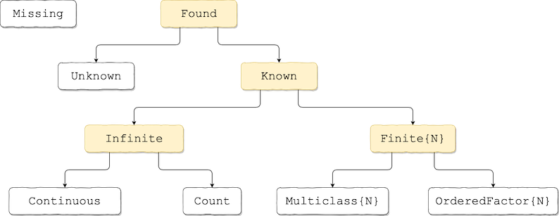

Getting Started
For an outline of MLJ's goals and features, see the Introduction.
This section introduces the most basic MLJ operations and concepts. It assumes MJL has been successfully installed. See Installation if this is not the case.
Choosing and evaluating a model
To load some demonstration data, add RDatasets.jl to your load path and enter
julia> import RDatasets
julia> iris = RDatasets.dataset("datasets", "iris"); # a DataFrameand then split the data into input and target parts:
julia> using MLJ
julia> y, X = unpack(iris, ==(:Species), colname -> true);
julia> first(X, 3) |> pretty
┌─────────────┬────────────┬─────────────┬────────────┐
│ SepalLength │ SepalWidth │ PetalLength │ PetalWidth │
│ Float64 │ Float64 │ Float64 │ Float64 │
│ Continuous │ Continuous │ Continuous │ Continuous │
├─────────────┼────────────┼─────────────┼────────────┤
│ 5.1 │ 3.5 │ 1.4 │ 0.2 │
│ 4.9 │ 3.0 │ 1.4 │ 0.2 │
│ 4.7 │ 3.2 │ 1.3 │ 0.2 │
└─────────────┴────────────┴─────────────┴────────────┘To list all models available in MLJ's model registry do models(). Listing the models compatible with the present data:
julia> models(matching(X,y))
42-element Array{NamedTuple{(:name, :package_name, :is_supervised, :docstring, :hyperparameter_ranges, :hyperparameter_types, :hyperparameters, :implemented_methods, :is_pure_julia, :is_wrapper, :load_path, :package_license, :package_url, :package_uuid, :prediction_type, :supports_class_weights, :supports_online, :supports_weights, :input_scitype, :target_scitype, :output_scitype),T} where T<:Tuple,1}:
(name = AdaBoostClassifier, package_name = ScikitLearn, ... )
(name = AdaBoostStumpClassifier, package_name = DecisionTree, ... )
(name = BaggingClassifier, package_name = ScikitLearn, ... )
(name = BayesianLDA, package_name = MultivariateStats, ... )
(name = BayesianLDA, package_name = ScikitLearn, ... )
(name = BayesianQDA, package_name = ScikitLearn, ... )
(name = BayesianSubspaceLDA, package_name = MultivariateStats, ... )
(name = ConstantClassifier, package_name = MLJModels, ... )
(name = DecisionTreeClassifier, package_name = DecisionTree, ... )
(name = DeterministicConstantClassifier, package_name = MLJModels, ... )
⋮
(name = RidgeCVClassifier, package_name = ScikitLearn, ... )
(name = RidgeClassifier, package_name = ScikitLearn, ... )
(name = SGDClassifier, package_name = ScikitLearn, ... )
(name = SVC, package_name = LIBSVM, ... )
(name = SVMClassifier, package_name = ScikitLearn, ... )
(name = SVMLinearClassifier, package_name = ScikitLearn, ... )
(name = SVMNuClassifier, package_name = ScikitLearn, ... )
(name = SubspaceLDA, package_name = MultivariateStats, ... )
(name = XGBoostClassifier, package_name = XGBoost, ... )In MLJ a model is a struct storing the hyperparameters of the learning algorithm indicated by the struct name (and nothing else).
Assuming the MLJDecisionTreeInterface.jl package is in your load path (see Installation) we can use @load to import the DecisionTreeClassifier model type, which we will bind to Tree:
julia> Tree = @load DecisionTreeClassifier
[ Info: For silent loading, specify `verbosity=0`.
import MLJDecisionTreeInterface ✔
MLJDecisionTreeInterface.DecisionTreeClassifierNow we can instantiate a model with default hyperparameters:
julia> tree = Tree()
DecisionTreeClassifier(
max_depth = -1,
min_samples_leaf = 1,
min_samples_split = 2,
min_purity_increase = 0.0,
n_subfeatures = 0,
post_prune = false,
merge_purity_threshold = 1.0,
pdf_smoothing = 0.0,
display_depth = 5) @001Important: DecisionTree.jl and most other packages implementing machine learning algorithms for use in MLJ are not MLJ dependencies. If such a package is not in your load path you will receive an error explaining how to add the package to your current environment. Alternatively, you can use the interactive macro @iload. For more on importing model types, see Loading Model Code.
Once instantiated, a model's performance can be evaluated with the evaluate method:
julia> evaluate(tree, X, y,
resampling=CV(shuffle=true), measure=cross_entropy, verbosity=0)
┌───────────────────────┬───────────────┬───────────────────────────────────────
│ _.measure │ _.measurement │ _.per_fold ⋯
├───────────────────────┼───────────────┼───────────────────────────────────────
│ LogLoss{Float64} @440 │ 1.92 │ [2.22e-16, 2.22e-16, 1.44, 2.88, 4.3 ⋯
└───────────────────────┴───────────────┴───────────────────────────────────────
1 column omitted
_.per_observation = [[[2.22e-16, 2.22e-16, ..., 2.22e-16], [2.22e-16, 2.22e-16, ..., 2.22e-16], [2.22e-16, 2.22e-16, ..., 2.22e-16], [36.0, 2.22e-16, ..., 2.22e-16], [2.22e-16, 2.22e-16, ..., 2.22e-16], [2.22e-16, 2.22e-16, ..., 2.22e-16]]]
_.fitted_params_per_fold = [ … ]
_.report_per_fold = [ … ]Evaluating against multiple performance measures is also possible. See Evaluating Model Performance for details.
A preview of data type specification in MLJ
The target y above is a categorical vector, which is appropriate because our model is a decision tree classifier:
julia> typeof(y)
CategoricalArray{String,1,UInt8,String,CategoricalValue{String,UInt8},Union{}}However, MLJ models do not actually prescribe the machine types for the data they operate on. Rather, they specify a scientific type, which refers to the way data is to be interpreted, as opposed to how it is encoded:
julia> info("DecisionTreeClassifier").target_scitype
AbstractArray{<:Finite, 1}Here Finite is an example of a "scalar" scientific type with two subtypes:
julia> subtypes(Finite)
2-element Array{Any,1}:
Multiclass
OrderedFactorWe use the scitype function to check how MLJ is going to interpret given data. Our choice of encoding for y works for DecisionTreeClassfier, because we have:
julia> scitype(y)
AbstractArray{Multiclass{3},1}and Multiclass{3} <: Finite. If we would encode with integers instead, we obtain:
julia> yint = Int.(y.refs);
julia> scitype(yint)
AbstractArray{Count,1}and using yint in place of y in classification problems will fail. See also Working with Categorical Data.
For more on scientific types, see Data containers and scientific types below.
Fit and predict
To illustrate MLJ's fit and predict interface, let's perform our performance evaluations by hand, but using a simple holdout set, instead of cross-validation.
Wrapping the model in data creates a machine which will store training outcomes:
julia> mach = machine(tree, X, y)
Machine{DecisionTreeClassifier,…} @217 trained 0 times; caches data
args:
1: Source @856 ⏎ `Table{AbstractArray{Continuous,1}}`
2: Source @665 ⏎ `AbstractArray{Multiclass{3},1}`Training and testing on a hold-out set:
julia> train, test = partition(eachindex(y), 0.7, shuffle=true); # 70:30 split
julia> fit!(mach, rows=train);
[ Info: Training Machine{DecisionTreeClassifier,…} @217.
julia> yhat = predict(mach, X[test,:]);
julia> yhat[3:5]
3-element MLJBase.UnivariateFiniteArray{Multiclass{3},String,UInt8,Float64,1}:
UnivariateFinite{Multiclass{3}}(setosa=>0.0, versicolor=>0.0, virginica=>1.0)
UnivariateFinite{Multiclass{3}}(setosa=>0.0, versicolor=>1.0, virginica=>0.0)
UnivariateFinite{Multiclass{3}}(setosa=>0.0, versicolor=>1.0, virginica=>0.0)
julia> log_loss(yhat, y[test]) |> mean
4.004850376568572Here log_loss (and cross_entropy) is an alias for LogLoss() or, more precisely, a built-in instance of the LogLoss type. For a list of all losses and scores, and their aliases, run measures().
Notice that yhat is a vector of Distribution objects (because DecisionTreeClassifier makes probabilistic predictions). The methods of the Distributions package can be applied to such distributions:
julia> broadcast(pdf, yhat[3:5], "virginica") # predicted probabilities of virginica
3-element Array{Float64,1}:
1.0
0.0
0.0
julia> broadcast(pdf, yhat, y[test])[3:5] # predicted probability of observed class
3-element Array{Float64,1}:
1.0
1.0
1.0
julia> mode.(yhat[3:5])
3-element CategoricalArray{String,1,UInt8}:
"virginica"
"versicolor"
"versicolor"Or, one can explicitly get modes by using predict_mode instead of predict:
julia> predict_mode(mach, X[test[3:5],:])
3-element CategoricalArray{String,1,UInt8}:
"virginica"
"versicolor"
"versicolor"Finally, we note that pdf() is overloaded to allow the retrieval of probabilities for all levels at once:
julia> L = levels(y)
3-element Array{String,1}:
"setosa"
"versicolor"
"virginica"
julia> pdf(yhat[3:5], L)
3×3 Array{Float64,2}:
0.0 0.0 1.0
0.0 1.0 0.0
0.0 1.0 0.0Unsupervised models have a transform method instead of predict, and may optionally implement an inverse_transform method:
julia> v = [1, 2, 3, 4]
4-element Array{Int64,1}:
1
2
3
4
julia> stand = UnivariateStandardizer() # this type is built-in
UnivariateStandardizer() @398
julia> mach2 = machine(stand, v)
Machine{UnivariateStandardizer,…} @659 trained 0 times; caches data
args:
1: Source @410 ⏎ `AbstractArray{Count,1}`
julia> fit!(mach2)
[ Info: Training Machine{UnivariateStandardizer,…} @659.
Machine{UnivariateStandardizer,…} @659 trained 1 time; caches data
args:
1: Source @410 ⏎ `AbstractArray{Count,1}`
julia> w = transform(mach2, v)
4-element Array{Float64,1}:
-1.161895003862225
-0.3872983346207417
0.3872983346207417
1.161895003862225
julia> inverse_transform(mach2, w)
4-element Array{Float64,1}:
1.0
2.0
3.0
4.0Machines have an internal state which allows them to avoid redundant calculations when retrained, in certain conditions - for example when increasing the number of trees in a random forest, or the number of epochs in a neural network. The machine building syntax also anticipates a more general syntax for composing multiple models, as explained in Composing Models.
There is a version of evaluate for machines as well as models. This time we'll add a second performance measure. (An exclamation point is added to the method name because machines are generally mutated when trained.)
julia> evaluate!(mach, resampling=Holdout(fraction_train=0.7, shuffle=true),
measures=[log_loss, brier_score],
verbosity=0)
┌───────────────────────┬───────────────┬────────────┐
│ _.measure │ _.measurement │ _.per_fold │
├───────────────────────┼───────────────┼────────────┤
│ LogLoss{Float64} @440 │ 1.6 │ [1.6] │
│ BrierScore @678 │ -0.0889 │ [-0.0889] │
└───────────────────────┴───────────────┴────────────┘
_.per_observation = [[[2.22e-16, 2.22e-16, ..., 2.22e-16]], [[0.0, 0.0, ..., 0.0]]]
_.fitted_params_per_fold = [ … ]
_.report_per_fold = [ … ]Changing a hyperparameter and re-evaluating:
julia> tree.max_depth = 3
3
julia> evaluate!(mach, resampling=Holdout(fraction_train=0.7, shuffle=true),
measures=[cross_entropy, brier_score],
verbosity=0)
┌───────────────────────┬───────────────┬────────────┐
│ _.measure │ _.measurement │ _.per_fold │
├───────────────────────┼───────────────┼────────────┤
│ LogLoss{Float64} @440 │ 1.64 │ [1.64] │
│ BrierScore @678 │ -0.118 │ [-0.118] │
└───────────────────────┴───────────────┴────────────┘
_.per_observation = [[[2.22e-16, 2.22e-16, ..., 2.22e-16]], [[0.0, 0.0, ..., 0.0]]]
_.fitted_params_per_fold = [ … ]
_.report_per_fold = [ … ]Next steps
To learn a little more about what MLJ can do, browse Common MLJ Workflows or Data Science Tutorials in Julia or try the JuliaCon2020 Workshop on MLJ (recorded here) returning to the manual as needed.
Read at least the remainder of this page before considering serious use of MLJ.
Data containers and scientific types
The MLJ user should acquaint themselves with some basic assumptions about the form of data expected by MLJ, as outlined below. The basic machine constructions look like this (see also Constructing machines):
machine(model::Supervised, X, y)
machine(model::Unsupervised, X)Each supervised model in MLJ declares the permitted scientific type of the inputs X and targets y that can be bound to it in the first constructor above, rather than specifying specific machine types (such as Array{Float32, 2}). Similar remarks apply to the input X of an unsupervised model.
Scientific types are julia types defined in the package ScientificTypes.jl; the package MLJScientificTypes.jl implements the particular convention used in the MLJ universe for assigning a specific scientific type (interpretation) to each julia object (see the scitype examples below).
The basic "scalar" scientific types are Continuous, Multiclass{N}, OrderedFactor{N} and Count. Be sure you read Scalar scientific types below to guarantee your scalar data is interpreted correctly. Tools exist to coerce the data to have the appropriate scientfic type; see MLJScientificTypes.jl or run ?coerce for details.
Additionally, most data containers - such as tuples, vectors, matrices and tables - have a scientific type.

Figure 1. Part of the scientific type hierarchy in ScientificTypes.jl.
julia> scitype(4.6)
Continuous
julia> scitype(42)
Count
julia> x1 = coerce(["yes", "no", "yes", "maybe"], Multiclass);
julia> scitype(x1)
AbstractArray{Multiclass{3},1}
julia> X = (x1=x1, x2=rand(4), x3=rand(4)) # a "column table"
(x1 = CategoricalValue{String,UInt32}["yes", "no", "yes", "maybe"],
x2 = [0.7724416301389967, 0.8896418918778644, 0.45928706981676526, 0.9500673163905997],
x3 = [0.8254967654071592, 0.4102029548871715, 0.9647690319442659, 0.040371202267861506],)
julia> scitype(X)
Table{Union{AbstractArray{Continuous,1}, AbstractArray{Multiclass{3},1}}}Two-dimensional data
Generally, two-dimensional data in MLJ is expected to be tabular. All data containers compatible with the Tables.jl interface (which includes all source formats listed here) have the scientific type Table{K}, where K depends on the scientific types of the columns, which can be individually inspected using schema:
julia> schema(X)
┌─────────┬─────────────────────────────────┬───────────────┐
│ _.names │ _.types │ _.scitypes │
├─────────┼─────────────────────────────────┼───────────────┤
│ x1 │ CategoricalValue{String,UInt32} │ Multiclass{3} │
│ x2 │ Float64 │ Continuous │
│ x3 │ Float64 │ Continuous │
└─────────┴─────────────────────────────────┴───────────────┘
_.nrows = 4Matrix data
MLJ models expecting a table do not generally accept a matrix instead. However, a matrix can be wrapped as a table, using MLJ.table:
matrix_table = MLJ.table(rand(2,3))
schema(matrix_table)┌─────────┬─────────┬────────────┐
│ _.names │ _.types │ _.scitypes │
├─────────┼─────────┼────────────┤
│ x1 │ Float64 │ Continuous │
│ x2 │ Float64 │ Continuous │
│ x3 │ Float64 │ Continuous │
└─────────┴─────────┴────────────┘
_.nrows = 2
The matrix is not copied, only wrapped. To manifest a table as a matrix, use MLJ.matrix.
Inputs
Since an MLJ model only specifies the scientific type of data, if that type is Table - which is the case for the majority of MLJ models - then any Tables.jl format is permitted.
Specifically, the requirement for an arbitrary model's input is scitype(X) <: input_scitype(model).
Targets
The target y expected by MLJ models is generally an AbstractVector. A multivariate target y will generally be a table.
Specifically, the type requirement for a model target is scitype(y) <: target_scitype(model).
Querying a model for acceptable data types
Given a model instance, one can inspect the admissible scientific types of its input and target, and without loading the code defining the model;
julia> i = info("DecisionTreeClassifier")
CART decision tree classifier.
→ based on [DecisionTree](https://github.com/bensadeghi/DecisionTree.jl).
→ do `@load DecisionTreeClassifier pkg="DecisionTree"` to use the model.
→ do `?DecisionTreeClassifier` for documentation.
(name = "DecisionTreeClassifier",
package_name = "DecisionTree",
is_supervised = true,
docstring = "CART decision tree classifier.\n→ based on [DecisionTree](https://github.com/bensadeghi/DecisionTree.jl).\n→ do `@load DecisionTreeClassifier pkg=\"DecisionTree\"` to use the model.\n→ do `?DecisionTreeClassifier` for documentation.",
hyperparameter_ranges = (nothing, nothing, nothing, nothing, nothing, nothing, nothing, nothing, nothing),
hyperparameter_types = ("Int64", "Int64", "Int64", "Float64", "Int64", "Bool", "Float64", "Float64", "Int64"),
hyperparameters = (:max_depth, :min_samples_leaf, :min_samples_split, :min_purity_increase, :n_subfeatures, :post_prune, :merge_purity_threshold, :pdf_smoothing, :display_depth),
implemented_methods = [:predict, :clean!, :fit, :fitted_params],
is_pure_julia = true,
is_wrapper = false,
load_path = "MLJDecisionTreeInterface.DecisionTreeClassifier",
package_license = "MIT",
package_url = "https://github.com/bensadeghi/DecisionTree.jl",
package_uuid = "7806a523-6efd-50cb-b5f6-3fa6f1930dbb",
prediction_type = :probabilistic,
supports_class_weights = false,
supports_online = false,
supports_weights = false,
input_scitype = Table{_s24} where _s24<:Union{AbstractArray{_s23,1} where _s23<:Continuous, AbstractArray{_s23,1} where _s23<:Count, AbstractArray{_s23,1} where _s23<:OrderedFactor},
target_scitype = AbstractArray{_s33,1} where _s33<:Finite,
output_scitype = Unknown,)
julia> i.input_scitype
Table{_s24} where _s24<:Union{AbstractArray{_s23,1} where _s23<:Continuous, AbstractArray{_s23,1} where _s23<:Count, AbstractArray{_s23,1} where _s23<:OrderedFactor}
julia> i.target_scitype
AbstractArray{_s33,1} where _s33<:FiniteBut see also Model Search.
Scalar scientific types
Models in MLJ will always apply the MLJ convention described in MLJScientificTypes.jl to decide how to interpret the elements of your container types. Here are the key features of that convention:
Any
AbstractFloatis interpreted asContinuous.Any
Integeris interpreted asCount.Any
CategoricalValuex, is interpreted asMulticlassorOrderedFactor, depending on the value ofx.pool.ordered.Strings andChars are not interpreted asMulticlassorOrderedFactor(they have scitypesTextualandUnknownrespectively).In particular, integers (including
Bools) cannot be used to represent categorical data. Use the precedingcoerceoperations to coerce to aFinitescitype.The scientific types of
nothingandmissingareNothingandMissing, native types we also regard as scientific.
Use coerce(v, OrderedFactor) or coerce(v, Multiclass) to coerce a vector v of integers, strings or characters to a vector with an appropriate Finite (categorical) scitype. See Working with Categorical Data).
For more on scitype coercion of arrays and tables, see coerce, autotype and unpack below and the examples at MLJScientificTypes.jl.
ScientificTypes.scitype — Functionscitype(X)The scientific type (interpretation) of X, as distinct from its machine type, as specified by the active convention.
Examples from the MLJ convention
julia> using MLJScientificTypes # or `using MLJ`
julia> scitype(3.14)
Continuous
julia> scitype([1, 2, 3, missing])
AbstractArray{Union{Missing, Count},1}
julia> scitype((5, "beige"))
Tuple{Count, Textual}
julia> using CategoricalArrays
julia> X = (gender = categorical(['M', 'M', 'F', 'M', 'F']),
ndevices = [1, 3, 2, 3, 2])
julia> scitype(X)
Table{Union{AbstractArray{Count,1}, AbstractArray{Multiclass{2},1}}}The specific behavior of scitype is governed by the active convention, as returned by ScientificTypes.convention(). The MLJScientificTypes.jl documentation details the convention demonstrated above.
MLJScientificTypes.coerce — Functioncoerce(A, specs...; tight=false, verbosity=1)Given a table A, return a copy of A, ensuring that the element scitypes of the columns match the new specification, specs. There are three valid specifiations:
(i) one or more column_name=>Scitype pairs:
coerce(X, col1=>Sciyype1, col2=>Scitype2, ... ; verbosity=1)(ii) one or more OldScitype=>NewScitype pairs (OldScitype covering both the OldScitype and Union{Missing,OldScitype} cases):
coerce(X, OldScitype1=>NewSciyype1, OldScitype2=>NewScitype2, ... ; verbosity=1)(iii) a dictionary of scientific types keyed on column names:
coerce(X, d::AbstractDict{Symbol, <:Type}; verbosity=1)Examples
Specifiying column_name=>Scitype pairs:
using CategoricalArrays, DataFrames, Tables
X = DataFrame(name=["Siri", "Robo", "Alexa", "Cortana"],
height=[152, missing, 148, 163],
rating=[1, 5, 2, 1])
Xc = coerce(X, :name=>Multiclass, :height=>Continuous, :rating=>OrderedFactor)
schema(Xc).scitypes # (Multiclass, Continuous, OrderedFactor)Specifying OldScitype=>NewScitype pairs:
X = (x = [1, 2, 3],
y = rand(3),
z = [10, 20, 30])
Xc = coerce(X, Count=>Continuous)
schema(Xfixed).scitypes # (Continuous, Continuous, Continuous)MLJScientificTypes.autotype — Functionautotype(X; kw...)Return a dictionary of suggested scitypes for each column of X, a table or an array based on rules
Kwargs
only_changes=true: if true, return only a dictionary of the names for which applying autotype differs from just using the ambient convention. When coercing with autotype,only_changesshould be true.rules=(:few_to_finite,): the set of rules to apply.
MLJBase.unpack — Functiont1, t2, ...., tk = unnpack(table, f1, f2, ... fk;
wrap_singles=false,
shuffle=false,
rng::Union{AbstractRNG,Int,Nothing}=nothing)Split any Tables.jl compatible table into smaller tables (or vectors) t1, t2, ..., tk by making selections without replacement from the column names defined by the filters f1, f2, ..., fk. A filter is any object f such that f(name) is true or false for each column name::Symbol of table.
Whenever a returned table contains a single column, it is converted to a vector unless wrap_singles=true.
Scientific type conversions can be optionally specified (note semicolon):
unpack(table, t...; wrap_singles=false, col1=>scitype1, col2=>scitype2, ... )If shuffle=true then the rows of table are first shuffled, using the global RNG, unless rng is specified; if rng is an integer, it specifies the seed of an automatically generated Mersenne twister. If rng is specified then shuffle=true is implicit.
Example
julia> table = DataFrame(x=[1,2], y=['a', 'b'], z=[10.0, 20.0], w=["A", "B"])
julia> Z, XY = unpack(table, ==(:z), !=(:w);
:x=>Continuous, :y=>Multiclass)
julia> XY
2×2 DataFrame
│ Row │ x │ y │
│ │ Float64 │ Categorical… │
├─────┼─────────┼──────────────┤
│ 1 │ 1.0 │ 'a' │
│ 2 │ 2.0 │ 'b' │
julia> Z
2-element Array{Float64,1}:
10.0
20.0